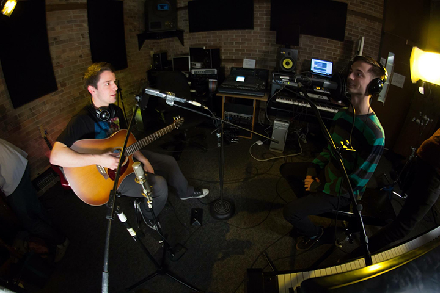

ABOUT ME
I am currently a junior, studying Sound Recording Technology at DePaul University’s School of Music.
Voice is my instrument of study at the school of music, but I am also quite capable of playing Piano, Drums, and Guitar. In the past year and a half at DePaul, I’ve been working in our studios at least once or twice a week, in order to get hands on experience with all of the equipment available to me. I’ve recorded a wide variety of genres spanning from electronic music to opera.
Aside from my own music, I’ve recorded songs written by two talented guitarists, Levi Clinton and Jack Kapson. In addition to being head engineer, I am also the drummer in Levi’s project Duck Like Animals.
Working with Jack Kapson felt a bit more “at home”, for we are old friends who have always shared a passion for music. While my software experience is quite extensive, I had never worked with a hardware compressor or equalizer before this session. As you may know, hardware editing can be tricky if you are doing it before the signal is recorded for the changes you make are permanent. With this knowledge, I proceeded with caution and used a tasteful amount of compression and equalization to really bring out Jack’s voice. I’m really glad I did this because his voice sits quite nicely on top of his Jack Johnson-esque guitar licks.
I am proficient at using Protools 11 and Logic X. I am very passionate about the music I work with and I am always striving to get a better sound than the last project. While I’m always working to make every next song better, I also understand that groups need their recordings to sound similar in order to have continuity across their entire record. I say this because it is crucial to keep your clients overall goals in mind.